◆
Lucro que é lucro
O custo de cada item fica congelado no momento da venda. Reajustar o preço de compra depois não muda o lucro que já aconteceu.
Feito para pequenas lojas e pequenas empresas: venda, estoque por lote e validade, crediário com contas a receber, lucro real calculado sobre o custo de cada lote e relatórios que saem em papel, PDF ou Excel. Funciona sem internet e os dados ficam com você.
Licença definitiva por R$ 297 ou 12x de R$ 24,75 — pagamento único, sem mensalidade. Ver o que está incluído.
O custo de cada item fica congelado no momento da venda. Reajustar o preço de compra depois não muda o lucro que já aconteceu.
Cada entrada vira um lote com custo e validade próprios. O sistema avisa o que está vencendo e quanto isso representa em dinheiro.
Fiado parcelado ou caderneta, do jeito que a loja já trabalha. Contas a receber, baixas, estorno e a lista de quem está atrasado.
Nove relatórios gerenciais com totais, impressão com pré-visualização, PDF pelo Windows e exportação que o Excel abre direto.
Banco de dados local. Cai a internet, você continua vendendo. Backup e restauração ficam no menu, à mão.
Instala em um computador comum e abre pronto para usar. Sem servidor, sem implantação, sem consultor.
Foi feito para o comércio pequeno, onde a mesma pessoa vende, compra, confere o estoque e ainda cobra. Se o seu negócio se parece com algum destes, ele serve:
A lista é só exemplo. O sistema serve a qualquer negócio que compra, guarda e revende — inclusive oficina, assistência técnica e prestador que vende peça junto com o serviço. Baixe a avaliação e teste com os seus próprios produtos: são 30 dias, sem cadastro e sem cartão.
O sistema abre mostrando faturamento e lucro do mês, vendas do dia, ticket médio e os alertas de estoque — sem você pedir nada.
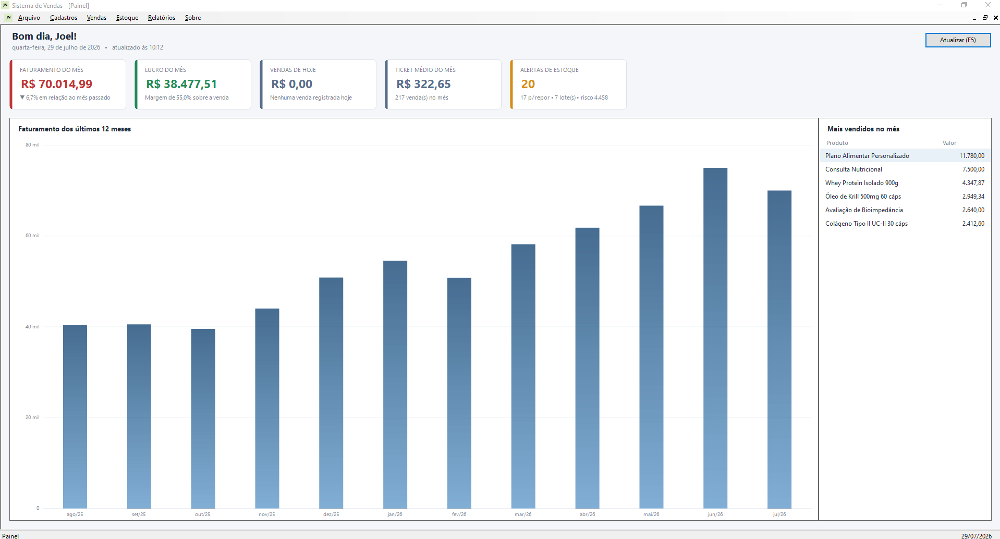
Na hora de fechar a venda você escolhe parcelado, com vencimentos que dá para negociar ali mesmo, ou caderneta — o cliente leva e vai pagando aos poucos. Antes de confirmar, o sistema avisa em vermelho se ele já deve e se tem parcela vencida.
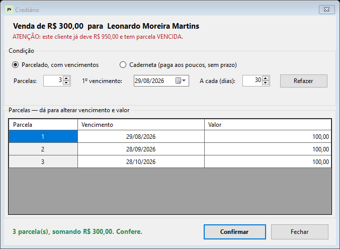
Todos os títulos numa tela só, com o atraso em dias e a situação destacada. Recebeu? Dá baixa — total ou em parte. Errou? Estorna, e a linha continua lá, riscada, para a conferência do caixa não perder o rastro.
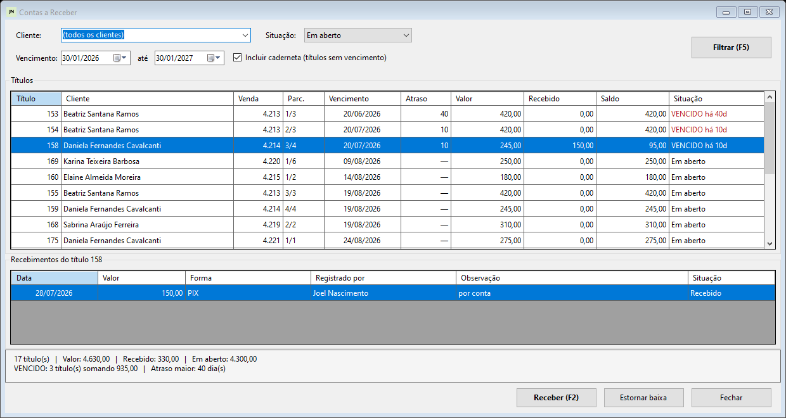
A conta corrente do cliente: tudo que ele comprou e tudo que pagou, em ordem, com o saldo acumulado linha a linha. Ele chega dizendo que veio pagar um pouco, você lança o valor e o sistema abate do mais antigo sozinho.
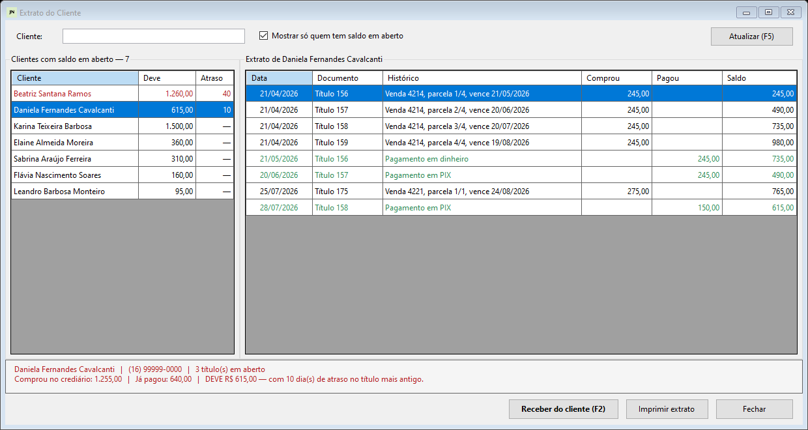
Faturamento por período, lucro por produto, lucro por lote, ranking de clientes em curva ABC, estoque mínimo, lotes a vencer, contas a receber por vencimento, recebimentos do período e inadimplentes.
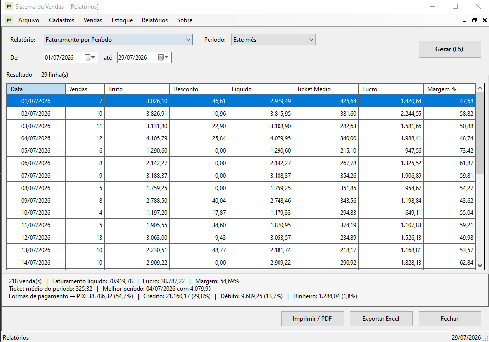
Cabeçalho com o período, colunas alinhadas, totais no rodapé e o resumo com as conclusões. Numerado e identificado com quem emitiu.
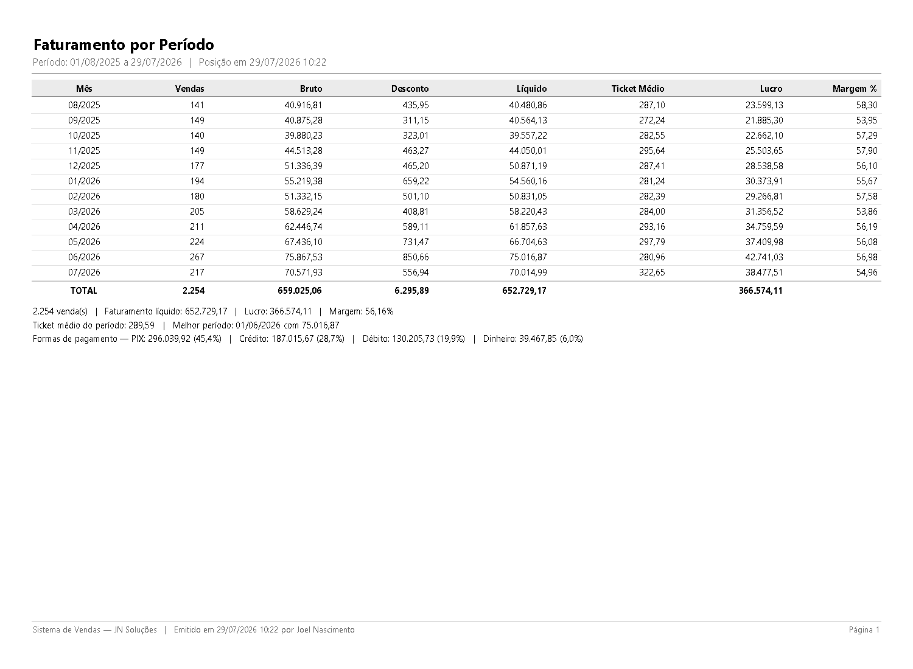
A venda mostra o lucro de cada item enquanto você monta o pedido. Se o produto controla lote, o sistema exige um lote com saldo — e avisa quando não há.
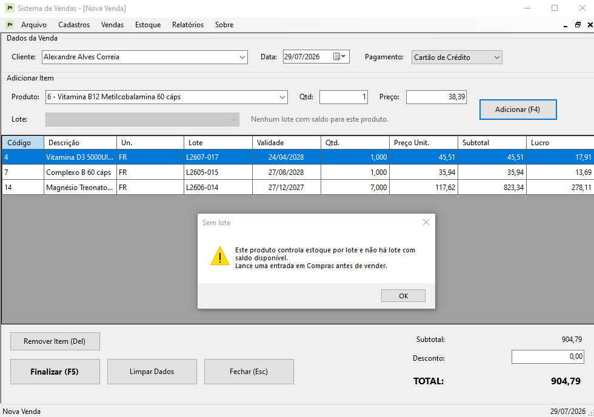
Posição de estoque contra o mínimo configurado, e a lista de lotes por data de validade com o valor que está em risco de virar perda.
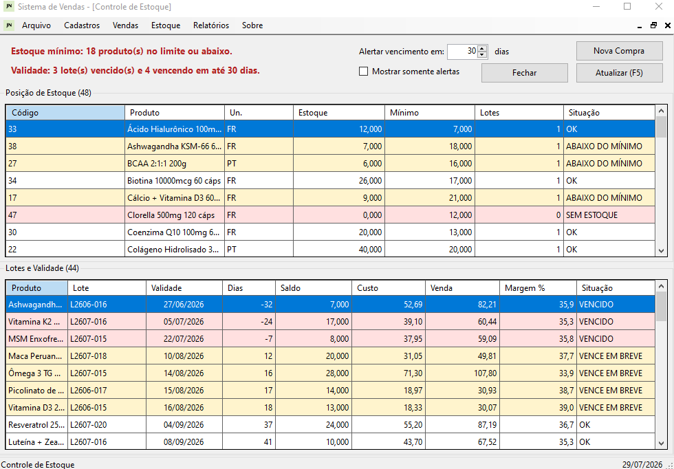
Clique para ver em tamanho real. As imagens usam uma base de demonstração; os dados não são de clientes reais.
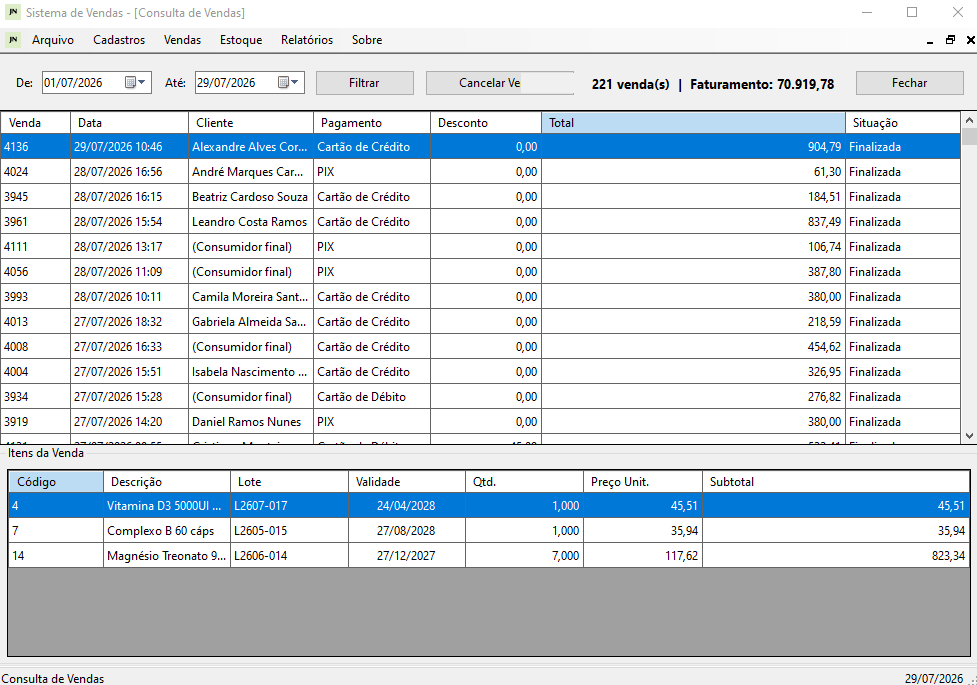
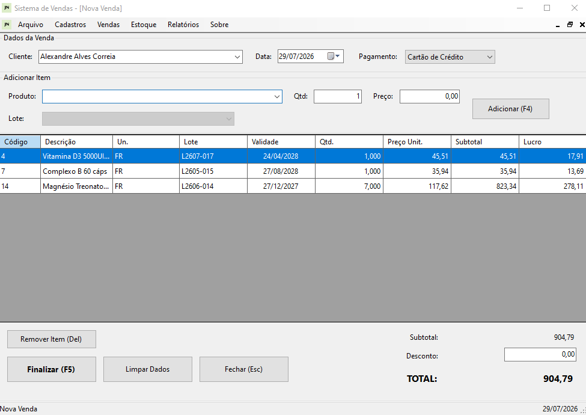
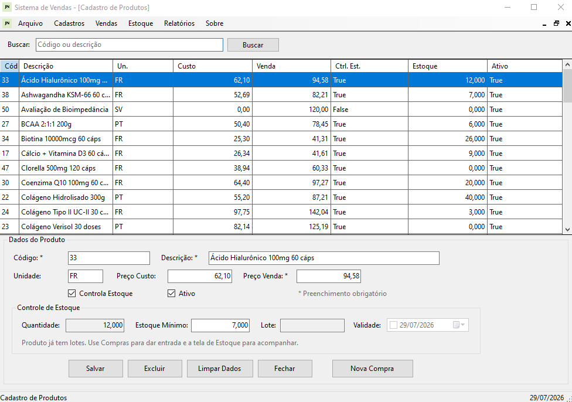
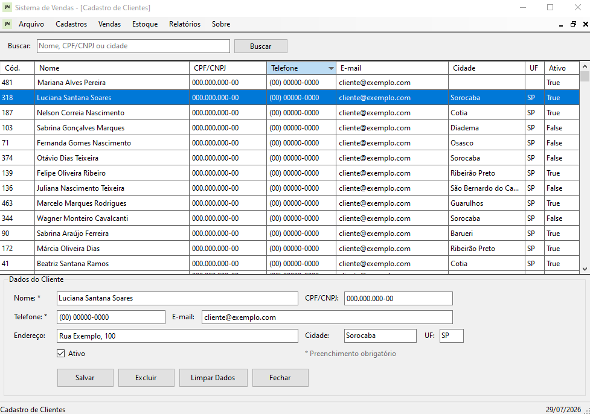
Um pagamento só. Não é assinatura: não vence, não renova sozinho e não cobra de novo no mês que vem. Você compra o sistema, não o aluguel dele.
ou 12x de R$ 24,75
O parcelamento não aumenta o total: 12 × R$ 24,75 = R$ 297,00.
Pagamento pelo Hotmart: cartão de crédito, Pix, boleto ou PayPal.
Sistema de loja pequena que cobra todo mês vira despesa fixa num lugar onde o mês bom e o mês ruim são bem diferentes. Aqui você paga uma vez e o programa continua funcionando — inclusive se você parar de falar comigo. Os dados ficam no seu computador, num banco que você mesmo faz backup.
A avaliação tem todos os recursos liberados e não pede cartão. O que você lançar durante o teste continua lá depois de ativar a licença: não precisa reinstalar nem recomeçar o cadastro.
Para você não gastar dinheiro esperando outra coisa: este sistema não emite nota fiscal eletrônica, não tem aplicativo de celular e não funciona em nuvem. É um programa para Windows, instalado no seu computador.
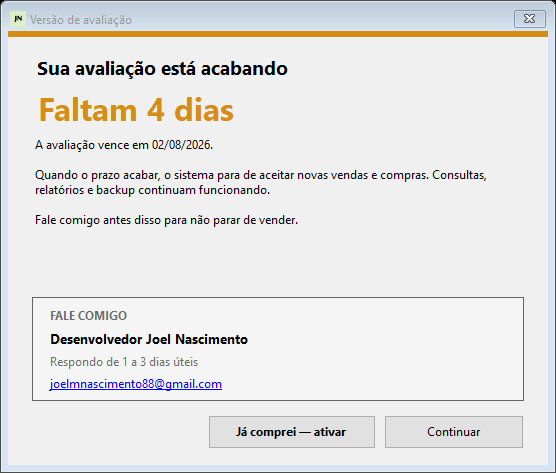
Se o prazo acabar e você não continuar, o sistema deixa de aceitar vendas e compras novas — só isso. Consultar o que já foi lançado, emitir relatórios e gerar backup continuam funcionando. Nada é apagado.
Atendimento direto com quem desenvolve o sistema — sem fila, sem chamado, sem robô.
Joel Nascimento — Desenvolvedor
jnsistemasinfo@gmail.com
·
respondo de 1 a 3 dias úteis
Deixe seu e-mail e o download começa em seguida.
O que eu faço com isso? O e-mail identifica o download. Marcando o aceite, também te aviso quando sai correção ou função nova — e você sai da lista quando quiser, pedindo em jnsistemasinfo@gmail.com. Não repasso seus dados para ninguém.
São 50 MB. Enquanto baixa, leia isto — vai te poupar um susto.
Por que esse aviso? O Windows exibe essa tela para todo programa novo que ainda não comprou um certificado de assinatura digital. Ele não diz que há vírus — diz que ainda não conhece o programa. Se preferir, me escreva e eu acompanho a instalação com você.